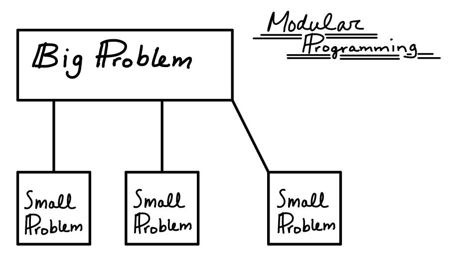
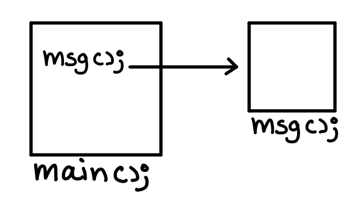

Modular Programming
A program may be broken up into a set of manageable functions or modules. This is called modular programming.
- A function is a collection of statements that perform a specific task.

Defining and calling functions
A function call is a statement that causes a function to execute.
Function definition – Contains the statements that make-up the function.
Remember that when creating a function, you must write its definition.
The function definition contains the following:
- Name
- Parameter list
- Body
- Return type
For example:
int main(){
cout << “Hello world!” << endl;
return 0;
}
Void functions
We can use void functions instead of a function that requires an integer type return. The function would not need to return a value when it has finished since it’s void type return. Therefore, no
return statement is required.
For example:
void displayMessage(){
cout << “Hello world!” << endl;
}
Calling a function
Functions are required to be called within the main function in order to be executed. The main function is automatically executed.
- Function header →
void functionName(){...} - Function call →
functionName();
One can also call a function within another function. One could think of these are nested functions or branching functions.

Function prototype
A function prototype eliminates the need to place a function definition before the function. Function prototypes allows us to simply call functions before they are even executed, this way we can have the main function always first. #include <iostream>
using namespace std;
void displayMSG();
int main(int argc, char *argv[]) {
cout << "Message displayed from main function!" << endl;
displayMSG();
return 0;
}
void displayMSG(){
cout << "Message displayed from the displayMSG function." << endl;
}
Without the prototype we would have to execute the functions first before we can even call them.
Sending data to function
When a function is called, the program may send values into the function.
Here’s the definition of a function that uses parameters:
void displayValue(int num){
cout << “Value is “ << num << endl;
}
The num variable is a parameter which allows us to send values to other functions.
When writing the prototype, we don’t have to list the variables in the parameter list. We could simply list the data type. Therefore, either of the following prototypes would work.
void displayValue(int num); or void displayValue(int);
When it comes to calling the displayValue function, we send the value in this manner → displayValue(5);
We can re-use the functions and send different values and in different formats such as:
displayValue(5);
displayValue(10);
displayValue(20);
displayValue(5+3);
displayValue(7.3);
Passing data by value
When an argument is passed into a parameter by value, only a copy of the argument’s value is passed. Changes to the parameter do not affect the original argument. Passing data by value has a very scope limited to the function receiveing the value.
The following example should illustrate the concept of passing data by value:
void changeMe(int);
int main(){
int i = 12;
changeMe(i);
return 0;
}
void changeMe(int i){
i = 0;
cout << i << endl;
}
The return statement
The
return statement causes a function to end immediately.
This will allow us to break the function at any given point.
void divisionFunction(int num, int den){ if(den==0){
cout << “ Division not valid” << endl;
return;
}
The snipper allows us would avoid performing the statements within the function once an argument appears to be invalid, the break statement would allow us to have more control over how our programs should behave.
Returning a value from a function
A function may send a value back to the part of the program that called the function. However, only one value can be returned.
- Remember that usually we can send one or multiple arguments to a particular function that we are calling, and in return, once the calculations have been made, the function could return to use a value.
- You can also have multiple functions with the same name as long as their their parameter list is not the same.
Defining a value returning function
We can return any valid data type such a:
int sum(int n1, int n2){
int result;
result = n1 + n2;
return result;
}
The same function could also be written as:
int sum(int n1, int n2){
return n1 + n2;
}
However, in order to use the returned values from the function we would need to call the function in the following manner:
i = sum(n1,n2);
or
cout << sum(n1,n2) << endl;
Returning a boolean value
Functions may return true or false values.
Take a look at the following program for a better understanding of this concept.
#include <iostream>
bool isValid(int);
using namespace std;
int main(int argc, char *argv[]) {
int num;
cout << "Enter number greater than 10: ";
cin >> num;
if(isValid(num)){
cout << "Good job!" << endl;
} else {
cout << "Number is not greater than 10" << endl;
}
return 0;
}
bool isValid(int i){
if(i > 10){
return true;
} else {
return false;
}
}
Using functions in a menu-driven program
Functions are ideal for use in menu-driven programs. When the user selects an item from a menu, the program can call the appropriate function. The main concept is that the menu is broken down into multiple functions. One could potentially write a function for every action needed.
Need to display something? → Write a function
Need to filter an input? → Write a function
Need to calculate something? → Write a function
Clearing the screen
In order to clean the screen or to simply start all over again we can call the system function with special arguments that are already pre-defined to perform an specific action.
For Unix-based OS (Linux, Mac):
system(“clear”);
For Windows:
system(“cls”);
Local and global variables
A local variable is defined in a particular function and is not accessible outside the function. A global variable is defined outside all functions and it’s accessible to all functions in its scope. This is all a matter of scope.
- Global variables will remain with the same value until we modify it.
- Global variables that have not been initialized will automatically be initialized to the value of 0/zero.
- Local variables are destroyed once the functions are over.
Static local variable
Static local variables allows us to carry the variable out of the function; meaning that its scope extends outside the function it has been declared. The variables will retain its value.
Declaring and initializing a static variable:
static int num = 20;
Default arguments
Default arguments are passed to parameters automatically if no argument is provided in the function call. We simply list the default values in the function prototype. When the function is called, the default values in the prototype will be used. However, when calling the function, one could potentially overwrite the default values by simply send our own arguments when calling the function.
//PROTOTYPE WITH DEFAULT VALUES
void function(double x=2.00, double y=2.00);
//PROTOTYPE WITH DEFAULT VALUES - ANOTHER STYLE
void function (double = 2.00, double = 2.00);
//OVERWRITING DEFAULT ARGUMENTS WHEN CALLING THE FUNCTION
function(3.00,5.00);
//OVERWRITTING ONLY DEFAULT VALUE - CALLING THE FUNCTION
function(3.00);
Default arguments quick summary:
- The value of a default argument must be a literal value or a named constant.
- When an argument is left out of a function call (because it has a default value), all the arguments that come after it must also be left out.
- When a function has a mixture of parameters both and without default arguments, the parameters with default value go last.
Using reference variable as parameters
A reference variable is a variable that references the memory location of another variable. Any change made to the reference variable is actually made to the one it references. Reference variables are sometimes used as function parameters.
In order to define a reference variable, we place an & in front of the variable’s name.
Declaring a reference variable:
int i = 0;
int &var = i;
The var variable will carry a reference to the i variable.
To display the actual address of the reference variable handle as &var.
Reference variables in function prototypes:
void function(int &var);
void function(int& var);
void function(int &);
void function(int&);
The ampersand must be in the prototype and in the header that uses the reference variable as the parameter. It does not appear in the function call.
Take a look at the following program to have a better understanding of how passing by reference works:
#include <iostream>
int addTen(int&);
using namespace std;
int main(int argc, char *argv[]) {
int n = 0;
cout << "Enter a number: ";
cin >> n;
int &num = n;
addTen(num);
cout << "num: " << n;
return 0;
}
int addTen(int &i){
i += 10;
return i;
}
The exit function
The
exit() function causes a program to terminate, regarless of which function or control mechanism is being executed.
The #include<cstdlib> must be included.
There are various forms of the exit function:
exit();
exit(EXIT_FAILURE);
exit(EXIT_SUCCESS);